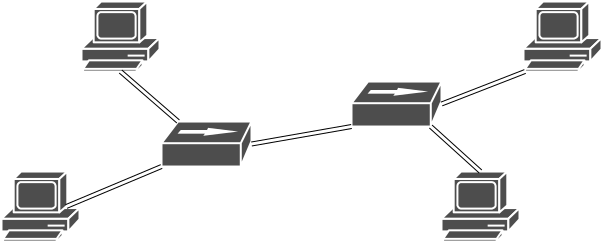

Lab 1: Switchyard & Mininet
Overview
In this chapter we will introduce all preparations for our network experiments. Then your are going to modify the examples we provided according to our requirements.
Details
Our lab assignments are based on CS640 in University of Wisconsin. Most materials are the same. In the future, we will improve the experimental content based on feedback.
For this lab assignment, you will gradually master our experimental environment. But we need you to know some basic skills, such as how to develop on linux or how to program. If you are not familiar with these, please tell TAs. We will list some helpful materials for you to get started quickly.
First, you need to complete setting up your environment. Read section Prerequisites.
Then here are some tutorials help you get started with our experimental environment.
These three tutorials give an example of a hub. After complete them, here are your tasks.
Add a test of sending a packet without Ethernet header. The file you should modify is
examples/hubtests.py.Count how many packets pass through one interface of a hub and log every time your hub receives 10 more packets to a file. The format of the log is shown after this paragraph. The file you should modify is
examples/myhub.py. Then make sure your new code of hub will pass your new tests. Take a screenshot of the test results and put it in your report.Change the topology to 2-to-2 dumbbell shows below. In this topology there are 4 hosts and 2 hubs. The file you should modify is
examples/start_mininet.py.Then run your new hub in your new Mininet topology, test the connectivity while using Wireshark to capture packets on one host (not hub). Save your capturing file and submit it with your report.
[!TIP] Your log file should be
<timestamp> <interface name> <ingress packet count> <egress packet count> ...For example,
1582290700.230708 hub0-eth2 4 6 hub0-eth1 3 6 hub0-eth0 3 6 1582290703.025999 hub0-eth2 7 12 hub0-eth1 5 14 hub0-eth0 8 12 ...Because we use two hubs here, so you will have difficulty to solve how to write two log files with different file names. One easy way is to use the start time. Another way is passing arguments into the Switchyard program like this. Here is the topology graph. 
Handing it in
We will provide a template of your lab assignment report here. You will submit a package of your report and source code files named <学号><姓名>_lab_0. Specifically, it will be like this if you use zip to package and export reports to docx.
123456789拾佰仟_lab_0.zip
├─实验报告.docx
├─hubtests.py
├─myhub.py
├─start_mininet.py
├─lab_0.pcap
├─hub_0.log
├─hub_1.log
The file names in your submission package has to exactly match the file names above. Otherwise, you will lose points!
[!WARNING] You may (or as I expect you must) meet the error when you what to modify/delete the files generated by the programs running on hosts in Mininet. It is because the owner of these files are the superuser
root. In this lab assignment, you need to change the owner to your login user. Run the command below to your log and capturing file.$ sudo chown $USER:$USER <file>Another useful command
ls -lcan check if the owner of the file isroot. You can see the file belongings torootistest.login the example.(syenv) cyq@cyq-VirtualBox:~/switchyard$ ls -l total 88 -rw-rw-r-- 1 cyq cyq 35147 2月 20 17:33 COPYING -rw-rw-r-- 1 cyq cyq 427 2月 20 17:33 Dockerfile drwxrwxr-x 6 cyq cyq 4096 2月 20 17:33 docs drwxrwxr-x 3 cyq cyq 4096 2月 20 17:33 documentation drwxrwxr-x 4 cyq cyq 4096 2月 21 00:01 examples -rw-rw-r-- 1 cyq cyq 5119 2月 20 17:33 README.rst -rw-rw-r-- 1 cyq cyq 144 2月 20 17:33 requirements.txt -rwxrwxr-x 1 cyq cyq 405 2月 20 17:33 runtests.sh -rw-rw-r-- 1 cyq cyq 2266 2月 20 17:33 setup.py drwxrwxr-x 4 cyq cyq 4096 2月 20 17:33 switchyard drwxrwxr-x 6 cyq cyq 4096 2月 20 17:37 syenv -rw-r--r-- 1 root root 181 2月 21 21:42 test.log drwxrwxr-x 2 cyq cyq 4096 2月 20 17:33 testsAs we mentioned before, using
sudois dangerous so be careful.